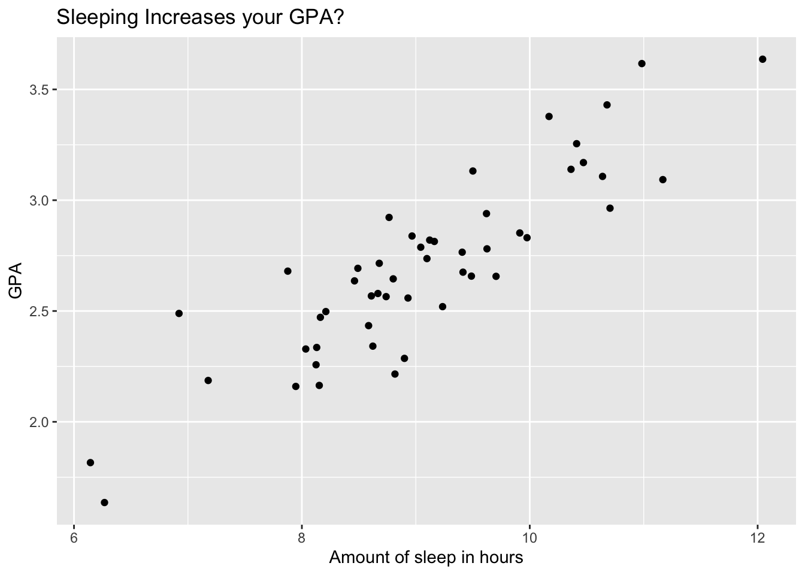

3 An Example
wage_data %>%
datasummary_skim()| Unique | Missing Pct. | Mean | SD | Min | Median | Max | ||
|---|---|---|---|---|---|---|---|---|
| year | 7 | 0 | 2005.8 | 2.0 | 2003.0 | 2006.0 | 2009.0 | |
| age | 61 | 0 | 42.4 | 11.5 | 18.0 | 42.0 | 80.0 | |
| logwage | 508 | 0 | 4.7 | 0.4 | 3.0 | 4.7 | 5.8 | |
| wage | 508 | 0 | 111.7 | 41.7 | 20.1 | 104.9 | 318.3 |
wage_data %>%
sample_n(size = 500) %>%
ggplot() +
aes( x = age, y = wage) +
geom_point() +
geom_smooth(method = 'lm',
se = FALSE) +
geom_smooth(method = 'lm',
se = FALSE,
formula = y ~ poly(x, degree = 3),
col = 'red') +
theme_economist() +
labs(title = 'Do older workers earn more?',
subtitle = 'Data Source: US Census Bureau',
x = 'Age',
y = 'Weekly Wage (in 2009)')